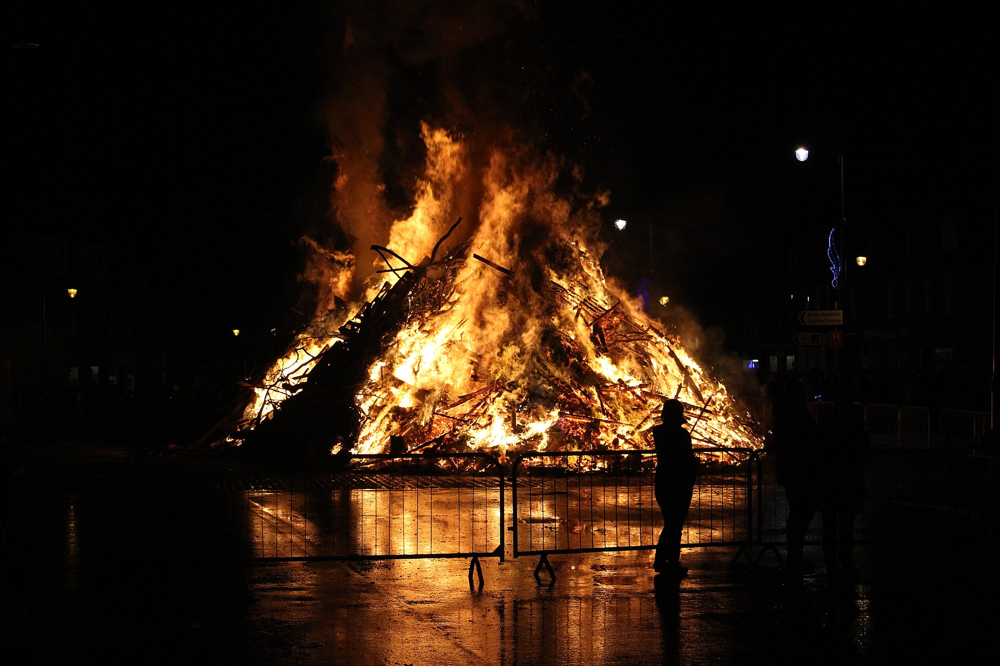
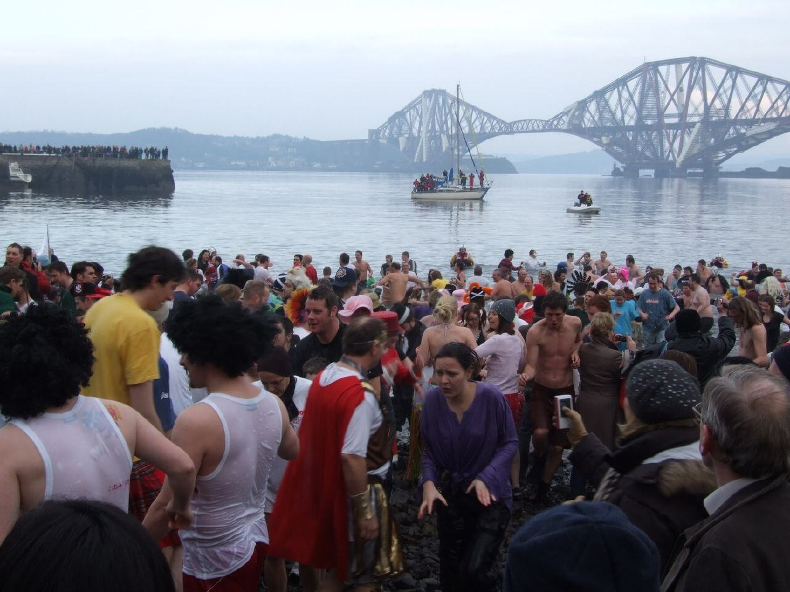
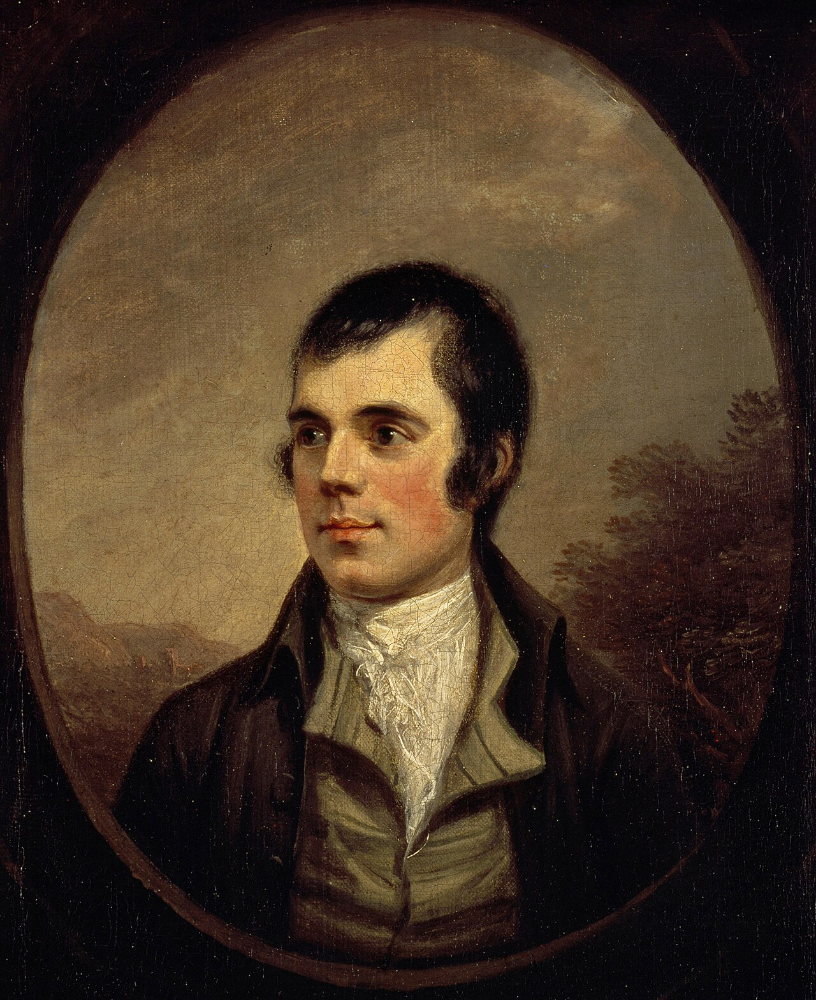

Roast turkey, potatoes and vegetables… and then the Scottish desserts.
Hogmanay/ˌhɒɡ.məˈneɪ/ · 31st December
Redding the house
Clean everything before midnight. Start the year fresh.
Torchlight procession
Thousands of torches through Edinburgh.
Street party
Music, dancing and fireworks over the castle.
First-footing
The first person in your house after midnight brings presents for good luck.
Coal
for a warm home
Shortbread
for food
Salt
for flavour
Black bun
to never be hungry
Whisky
for a happy year
“Happy New Year!”

Fire
The Biggar Bonfire
On Hogmanay night, people light a huge bonfire in the street.

Ice
The Loony Dook
On 1st January, people jump into the very cold sea in funny costumes.
It’s almost midnight…
Count down with us!
10
Happy New Year!

Robert Burns, 1788
For auld lang syne, my dear, for auld lang syne, we’ll tak a cup o’ kindness yet for auld lang syne.
“Auld lang syne” = “old long since”: for old times’ sake. People stand in a circle, cross their arms and hold hands.
In conclusion…
In Scotland, Christmas and New Year are two parts of one big celebration.
Adam
I have learntthat Christmas was banned for centuries.
I would like tovisit Edinburgh for Hogmanay.
Yaneli
I have learnta lot about Scottish food.
I enjoyedthe Christmas markets.
I would like totry shortbread.
Miurka
I enjoyedfirst-footing.
I have learntthe song Auld Lang Syne.
I would like tosee the bonfire in Biggar.
Thank you!
Any questions?
Merry Christmas & Happy Hogmanay!
Photos: Wikimedia Commons (Creative Commons / public domain) — Edinburgh Castle, Edinburgh Christmas Market, Calton Hill procession, Biggar Hogmanay bonfire, Loony Dook, Christmas dinner, shortbread, cranachan, clootie dumpling, black bun, Robert Burns by Alexander Nasmyth.